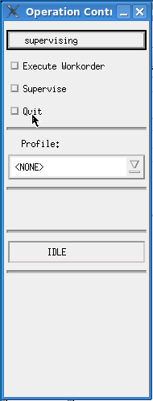

Starting SmarTest with supervisor mode
With supervisor status you have the possibility of both creating and allocating workorders, and executing them. Moreover you can run calibration and diagnostics tools using the Supervising Pop-up window (see the figure below). But you have no access to the test program development functions of SmarTest.
To start SmarTest with supervisor mode open a terminal and type:
HPSmarTest -S or,
HPSmarTest -So if you are running the software offline (that is, the tester is not connected).
The screen shown below appears.

In order to change the user mode of SmarTest, click the button supervising in the Operation control window (figure above), and chose the new desired mode.
In order to exit SmarTest, click Quit in the Operation control window.